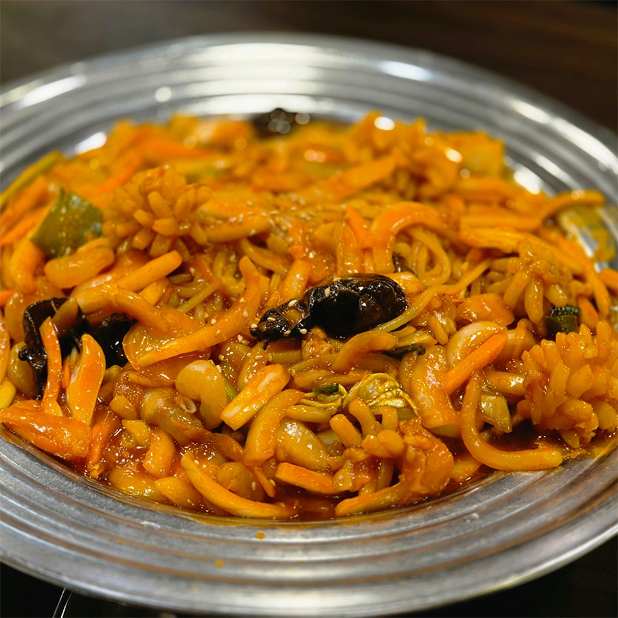
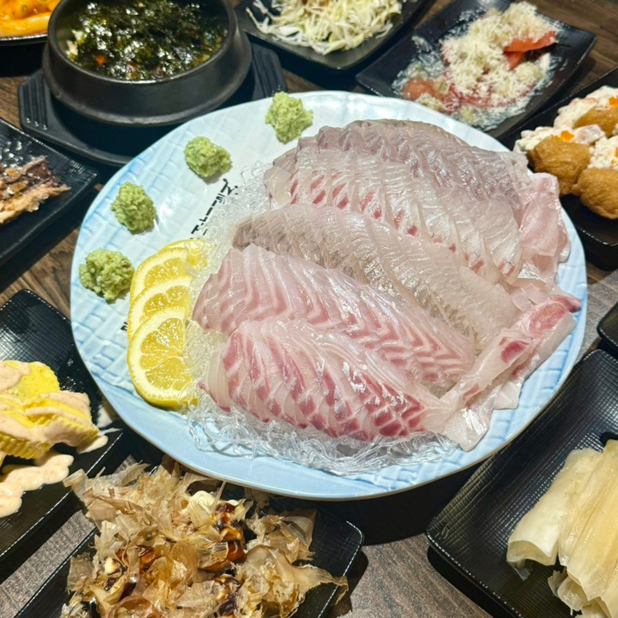
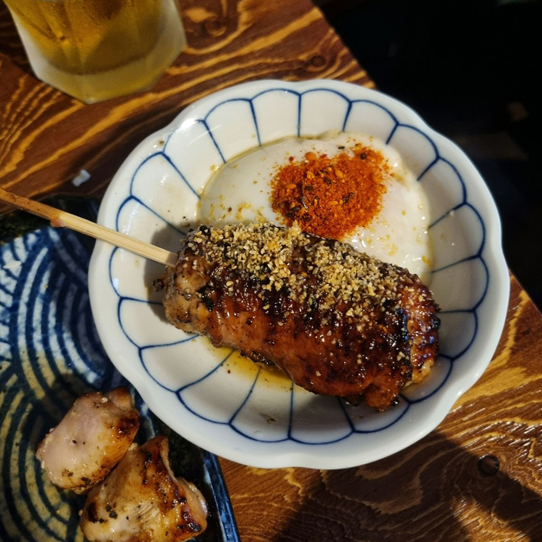
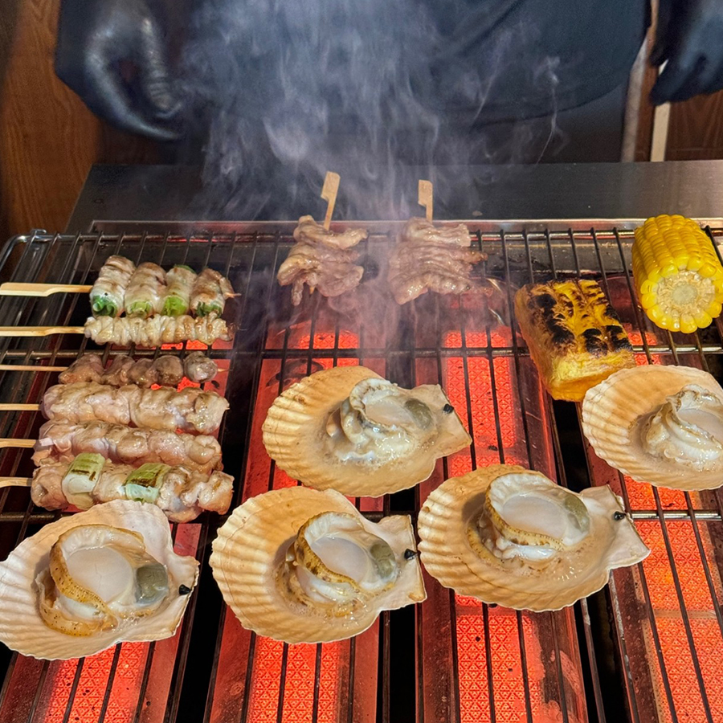

승아의 맛집을 소개합니다.
Home
대구
서울.경기
대구
경북
01

리안
대구광역시 수성구 담티역 부근
야끼우동
9,000원
야끼우동 정말 맛있습니다.
다른메뉴 쳐다보지 말고 야끼우동과 탕수육만 시켜서 드세요.
맛집 보러 가기
02

회한사라
대구광역시 동구 동대구역 부근
모둠회
2인 50,000원
저만의 맛집이 모두의 맛집이 되어버린 횟집입니다.
스끼다시 구성이 매우 훌륭합니다.
맛집 보러 가기
03

요모
대구광역시 동구 동대구역 2번출구 부근
츠쿠네, 라곰소바
츠쿠네 4,000원 | 라곰소바 14,000원
이 집 보다 맛있는 츠쿠네는 먹어본적이 없습니다.
라곰소바와 함께 먹으면 정말로 맛있습니다.
맛집 보러 가기
04

요로이케
대구광역시 중구 중앙로역 3번출구 앞
백가리비, 후토마끼
백가리비 4,500원 | 후토마끼5P 13,900원
수조에 있는 가리비를 눈앞에서 잡아 바로 야키토리로 구워줍니다.
후토마끼도 맛있으니 같이 먹어야해요.
맛집 보러 가기